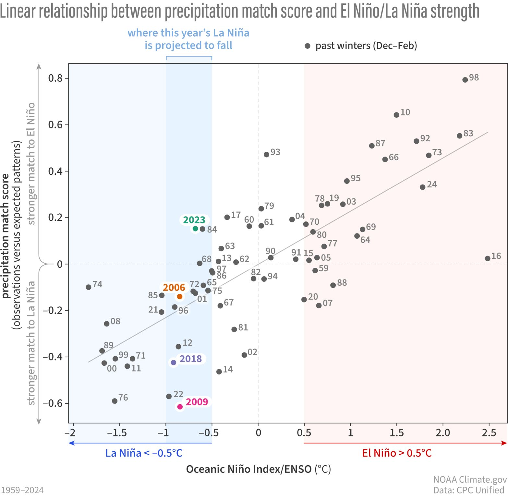
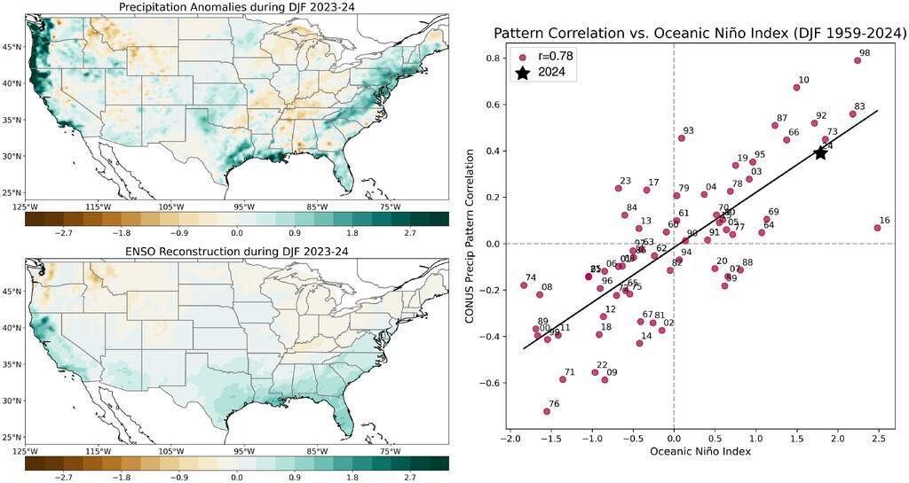
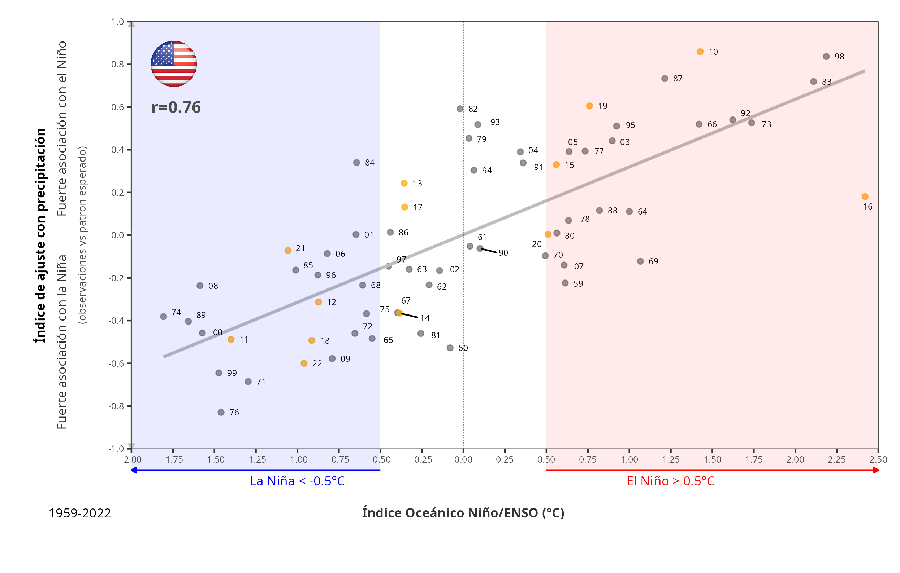
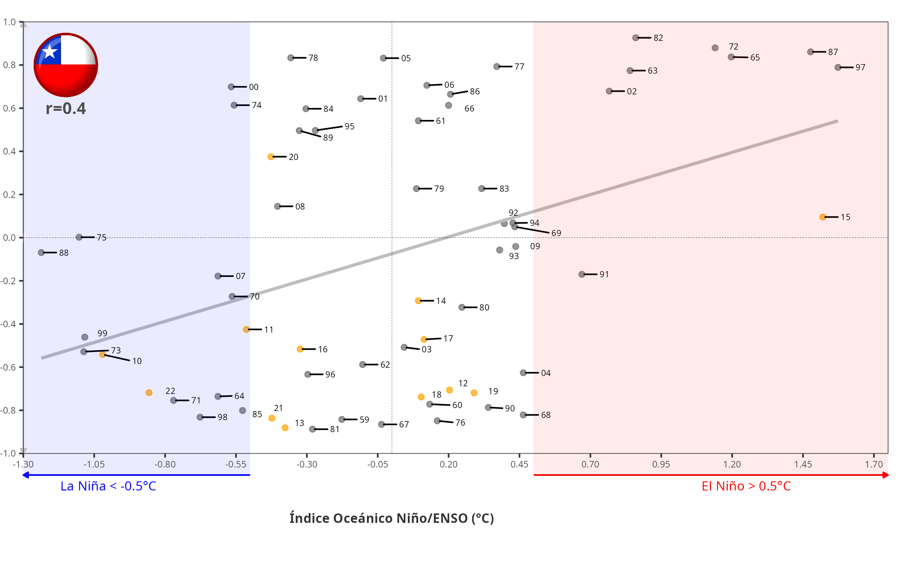
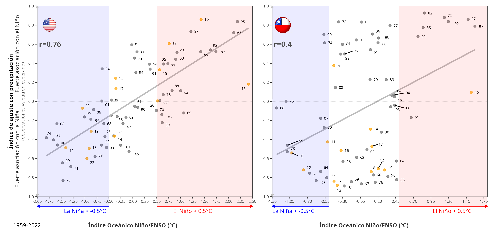

![]()
Michelle L’Heureux’s post on LinkedIn (post here) a few months ago inspired me to replicate it for Chile. At the same time, that post is based on a scientific article published in the journal “Bulletin of the American Meteorological Society”. You can access the article at this link.
The figure that got my attention was this one:

The figure shows the match score versus the Oceanin Niño Index from 1959 to 2024. The “match score” reflected how well the expected spatial pattern of precipitation was modeled based on ENSO (using ONI in this case), adjusted to the observed spatial pattern. For this it used what is called the “pattern correlation”, which, simply, is the linear correlation between all the pixels between precipitation expected (based on ONI) and the observed precipitation. Therefore, as it is a correlation, the Pearson correlation (r) is calculated, which, if it is positive (near 1), reflects a high association with the El Niño spatial pattern, but if the values are negative (near -1), the association is more related to the La Niña spatial pattern. Finally, the plot shows the correlation between the ONI and this match score; in the case of the US, it got an r=0.78.
In simple terms, the result means that for the US, when it is under El Niño (ONI>0.5), for example, for winter 2023–24, the spatial pattern has a better fit with the expected precipitation winter pattern (based on ENSO), as the ONI is stronger, as shown in this figure:

When the winter is under La Niña (ONI < -0.5), the same thing happens but in the opposite direction; as the La Niña is stronger (more negative), the spatial pattern achieves a higher match score. However, when the winter year is classified as neutral (-0.5 < ONI < 0.5), the match score generally does not indicate a good fit for either La Niña or El Niño, as expected.
Therefore, my initial question was, how does this pattern work for Chile? To achieve this and ensure that my analysis is correct, I first remade it for the US. The next figure shows my result.

I got an r=0.76 in comparison with the r=0.78 in the article (Fig. 3 here]. But my analysis was based on 1959-2022 instead of 1959-2024, and I used ERA5-Land data. Nevertheless, the two figures are quite similar. Then, I can have trust regarding my approach.
Now, I made the analysis for winter Chile (June, July, and August), and what I’ve got is shown in the next figure:

Two things that got my attention on this figure are:
- What is shown for neutral ENSO conditions and,
- What showed the years since 2010
The correlation between ONI and the match score in this case is r=0.4, mostly due to what is happening under neutral conditions. When conditions are El Niño or La Niña, the match scores tend to align with the expected spatial pattern. But, in neutral conditions, the pattern could be highly aligned with El Niño or La Niña, which are mostly equally likely. But if we consider the years since 2010 (dots in orange), a period that has been called a “megadrought,” we can see that all the years have been aligned with La Niña, except 2020, and 2015 (Niño Godzilla) has no correlation between ONI and match score.
In summary, the expected spatial pattern of winter precipitation in the US, based on ENSO, shows a strong correlation with the observed patterns for Niño, Niña, and neutral conditions. For Chile, the correlation is higher for Niño and Niña, but under neutral conditions anything could happen. What has been happening since 2010 is that for neutral and Niña, the pattern is associated with what is expected for Niña. Moreover, the 2015 event, which was called the Niño Godzilla due to its magnitude, did not align with the expected Niño pattern.
As an example, these are the expected precipitation anomaly (JJA) patterns for 1997 (Niño) and 1998 (Niña) over central Chile.
Finally, the plots for the US and Chile combined,
